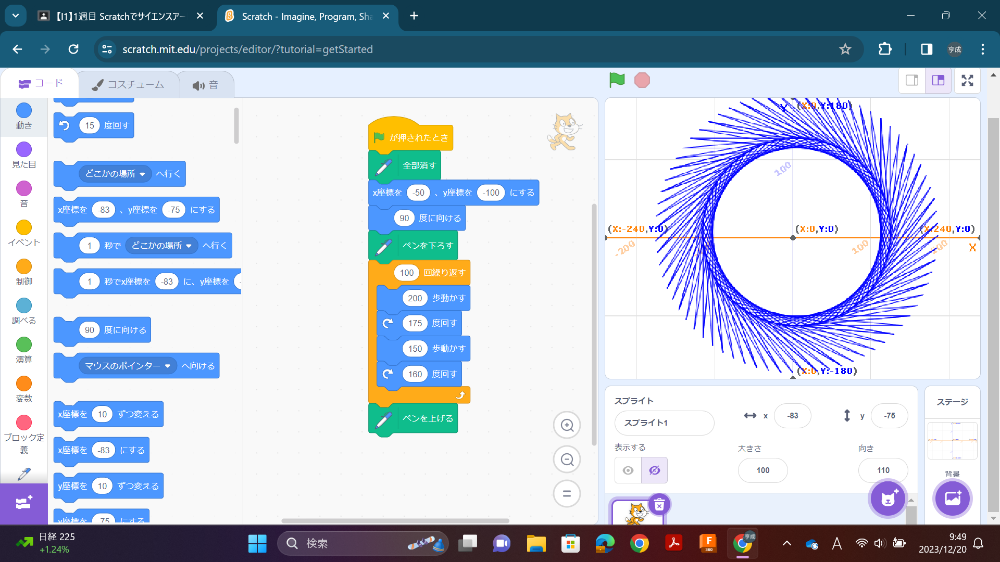
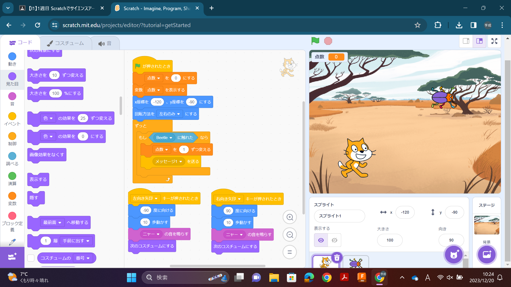

1週目のレポート ： 公大高専１年実習I-1
1-2b班35番 kukurage
第1週目
1-1 サイエンスアート

1.内容
スクラッチを使って猫が動いた後に線を書くプログラムを制作した。
2.感想
スクラッチを使ったのは小学生以来ですが、スクラッチの簡単操作のおかげで非常に独創性のあるアートができた。
1-2 ゲーム

1.内容
スクラッチを使って猫を動かし落ちてくる虫に触れて点数を取るゲームを制作した。
2.感想
上記の1-1の内容より難しい内容だったが、自分の想像通りに動くプログラムを制作することができた。 また、実験実習のテキストには書かれていないオリジナルのプログラムを追加したことで、虫に触れて消えた後に再度上から虫が降るようにすることができた。
1-3 ホームページ作成
私のホームページ
1.内容
Githubを使って自分のHomePageを作成した。
2.感想
HomePageを作成するためのプログラミングは全くわからないが、すでに書かれているプログラミングのコードから「好きなゲーム」という項目を作ることができた。 初めてHomePageを作ることができて、とてもうれしかった。